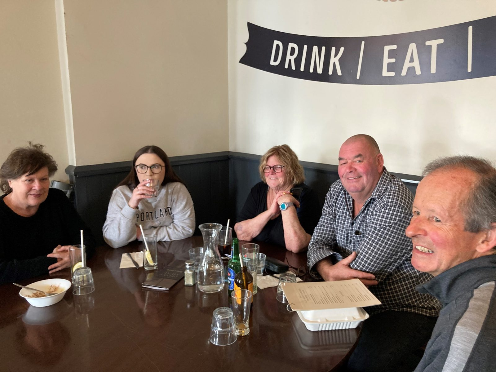

We are a small but determined group of volunteers — people living with kidney disease, their families, and friends of the renal community — working to make life a little easier for everyone affected by kidney problems in Otago.
The Otago Kidney Society Incorporated (OKS) is a registered charitable entity under the Charities Act 2005. The Society exists exclusively for charitable purposes:
Our tikanga is supportive of te ao Māori, and we aim to be welcoming to everyone who comes through our doors — patients, whānau, healthcare workers and friends.

OKS has been part of the Otago renal community for many years. We grew out of a simple need — people facing kidney disease, dialysis or transplantation wanted somewhere to meet others who understood, and a way to support the wonderful staff at the Dunedin Hospital Dialysis Unit.
Today, much of what we do is still rooted in that original kaupapa: friendship, connection and quietly making things better. We send out a quarterly newsletter, host four lunches a year around Otago, drop in at the Dialysis Unit on Wednesday afternoons, and partner with Kidney Health New Zealand each March for World Kidney Day.
We’re also proud to do practical things behind the scenes — gift packs for new patients, petrol vouchers for travel, fresh baking from Good Bitches Baking for dialysis patients every fortnight, and equipment top-ups for the Unit (a new ice machine and headphones in recent years).
We were enormously grateful when Katherine Rich agreed to become our Patron. Some readers will remember her father, the late Jock Ellison, a former OKS President who fought tirelessly to make organ donation easier in Aotearoa. We feel that legacy continues.
Volunteer committee members elected by our membership at the Annual General Meeting. The 2026 committee was confirmed at the AGM held on 10 March 2026.
Leads the committee and is the public face of OKS.
Keeps our records and minutes, and is the Society’s registered contact.
Looks after the finances, accounts and reporting.
Organises our member lunches and the World Kidney Day stand each March.
Developed our hand-shaped kidney health pamphlet for community education.
Organises Teams meetings and helps source equipment for the Dialysis Unit.
Visits patients at the Dialysis Unit and contributes to our newsletter.
Visits patients at the Dialysis Unit alongside the rest of the team.
Want to be put in touch with one of our committee? Email info@oks.nz and we’ll pass your message on.
OKS operates under a written constitution adopted by our membership and registered with the Registrar of Incorporated Societies and Charities Services.
Our financial year runs from 1 April to 31 March. We hold an Annual General Meeting each year — usually in autumn — where members receive the annual report and audited financials, and elect the committee.
Committee members serve two-year terms. Any financial member may stand for election or attend and vote at general meetings.
Annual reports, audited accounts and our constitution are available to members on request — please email info@oks.nz.
We’d genuinely love to hear from you. The committee meets quarterly, usually online or at the hospital, and you don’t need any special background — just an interest in our community and a few hours a year.